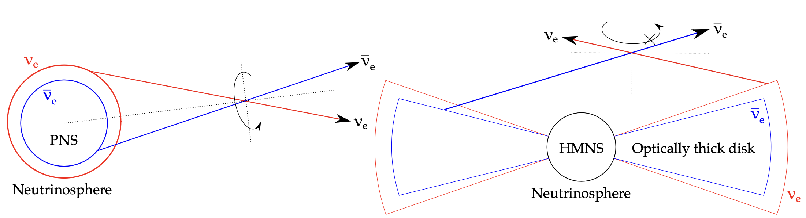

This page shows the complete numerical simulation animation in the poster.
The toy-model used is a colliding neutrino-beam model, demonstrating the feature where neutrino beams are emitted from opposite boundaries and pass through each other.
If you have any doubts or comments, please contact [b10204005@ntu.edu.tw].

(The figure shows the possible geometric structure that the model aims to simulate.)
Only advection
(Here we can not see any oscillation)
\( Nvz = 2 \), with different \( \alpha \)
(Please focus on the transition layer)
1. \( \alpha = 1.0 \) (symmetric case)
2. \( \alpha = 0.1 \)
3. \( \alpha = 0.5 \)
4. \( \alpha = 0.8 \)
5. \( \alpha = 2.0 \)
\( \alpha = 1.0 \), with different \( Nvz\) (Multiple beams)
(Please focus on the onset time of FFS)
1. \( Nvz = 8\)
2. \( Nvz = 16\)
3. \( Nvz = 32\)
Triggered by vacuum oscillation (mixing angle \(\theta = 10^{-6} \))
(Triggered by vacuum oscillation, FFS also happen! )
1. \( \alpha = 1.0 \), \( Nvz = 2\)
2. \( \alpha = 1.0 \), \( Nvz = 16\)
Future Work!
Consider only right-going baems with time-dependent \( \alpha\)
FFC seems happens in some interval, then cease to exist.